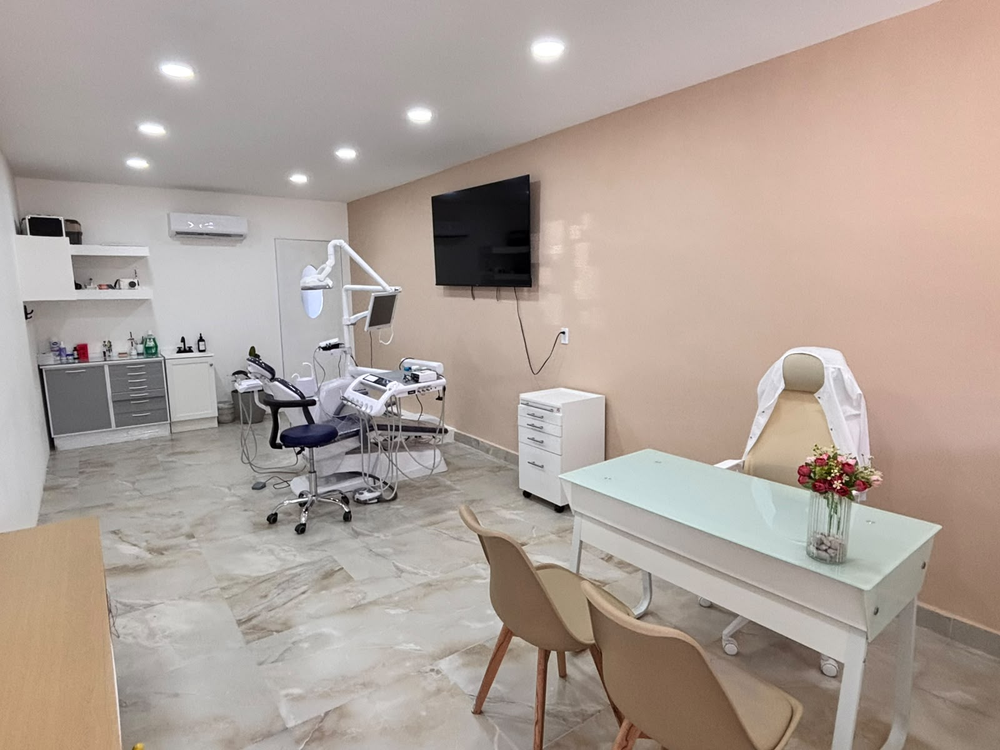
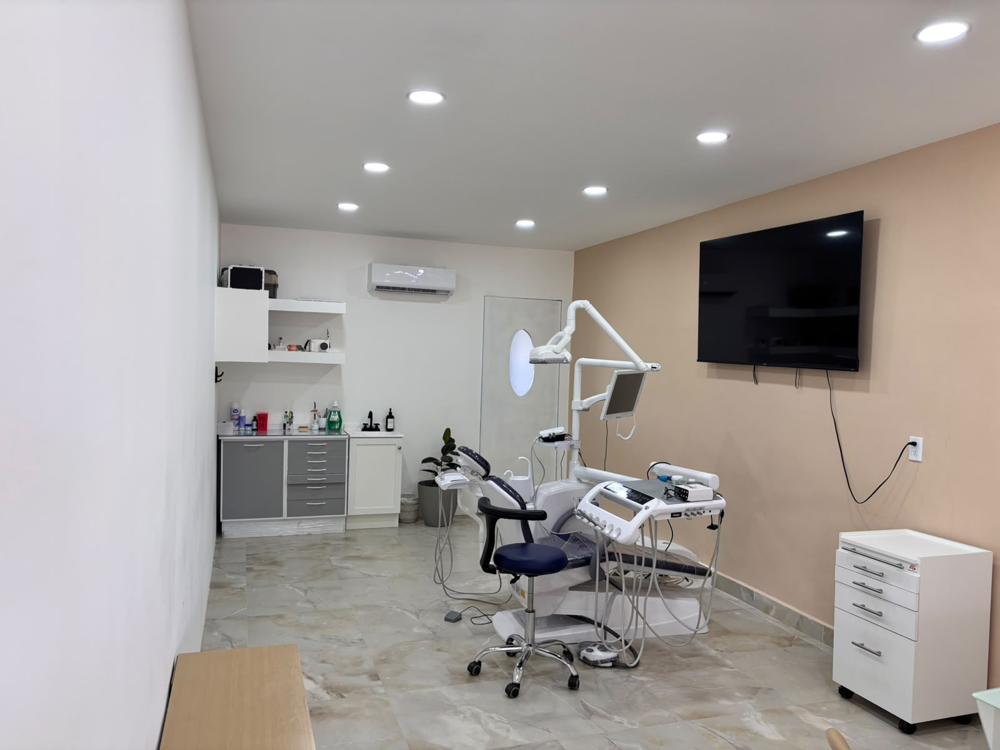
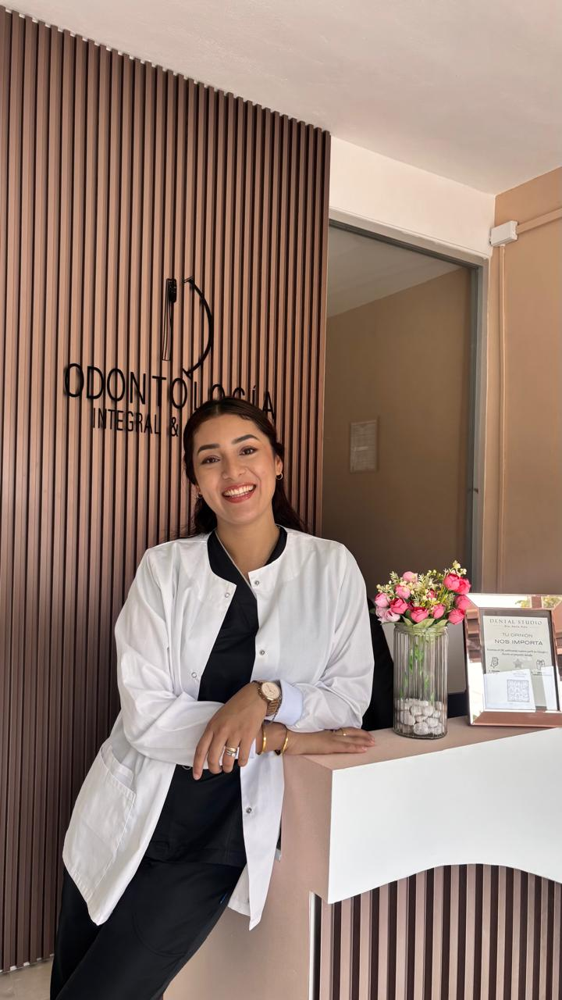
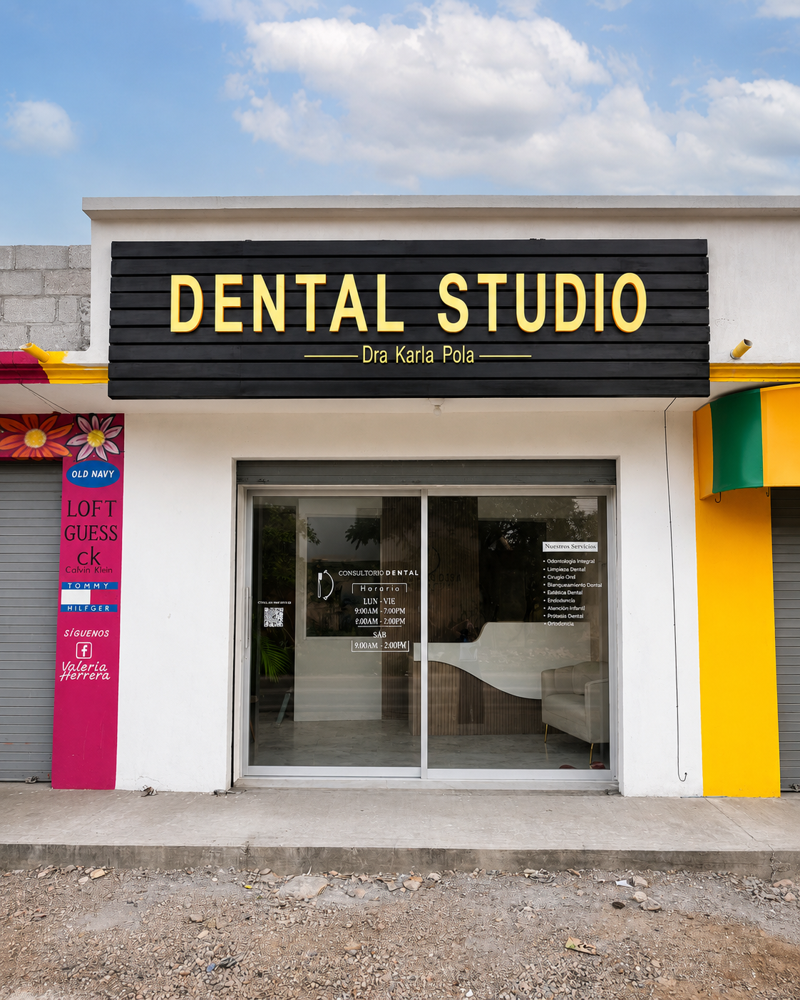
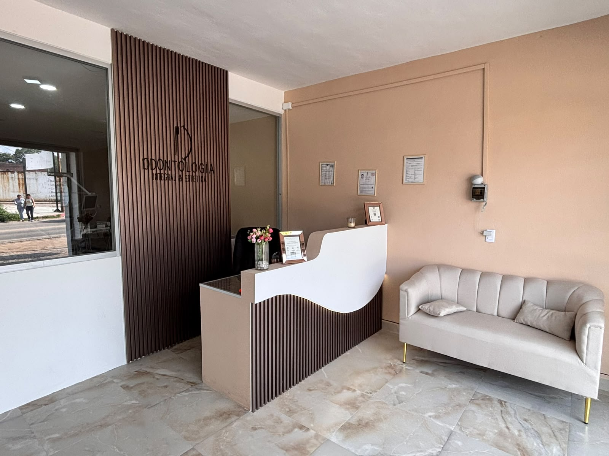
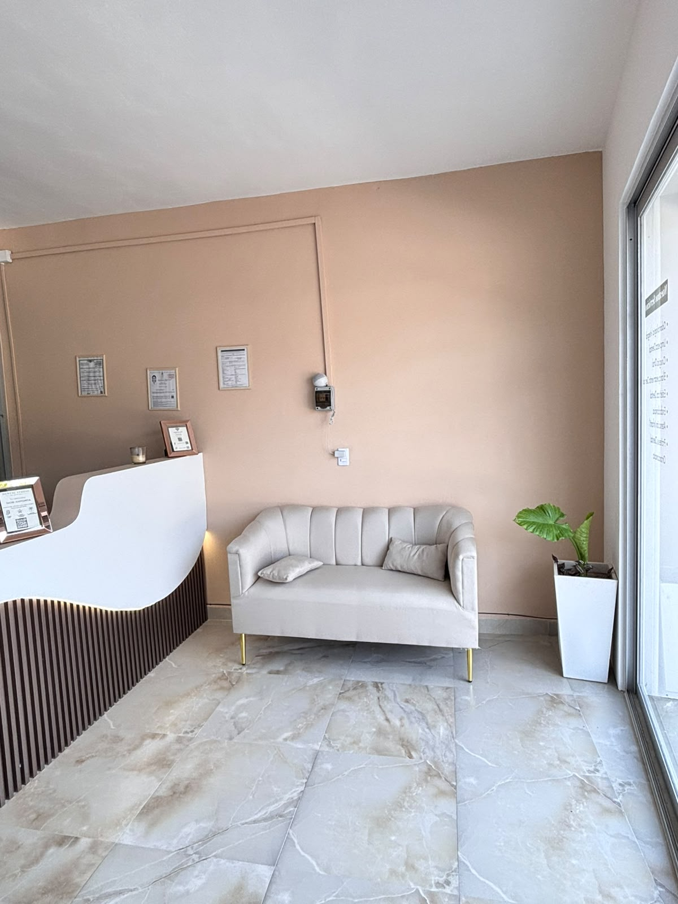
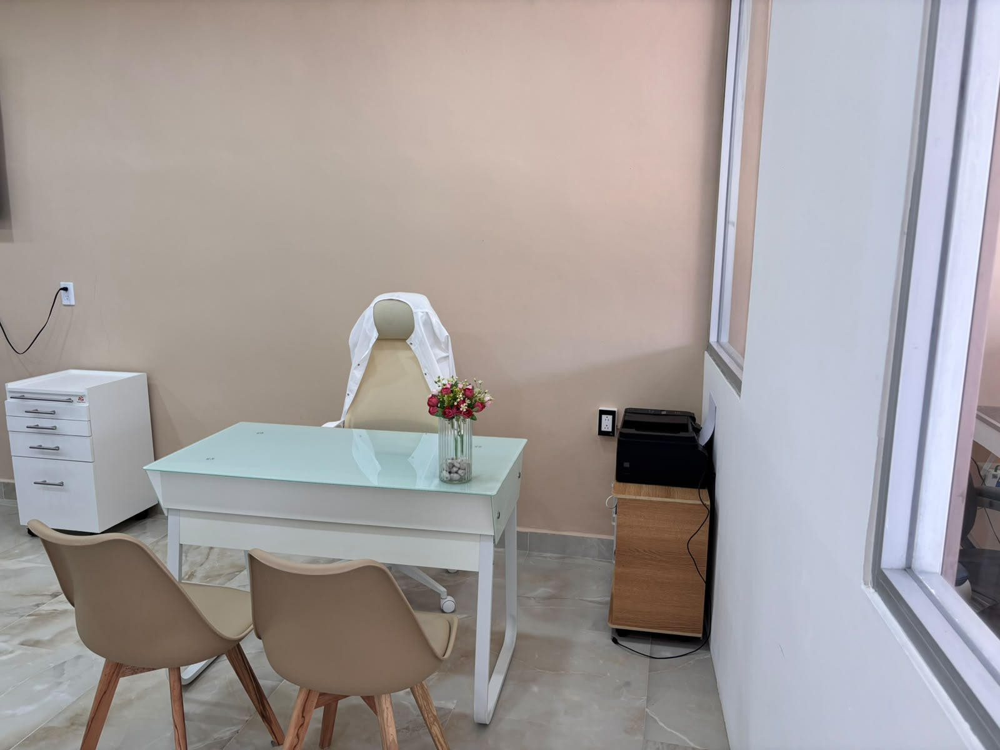
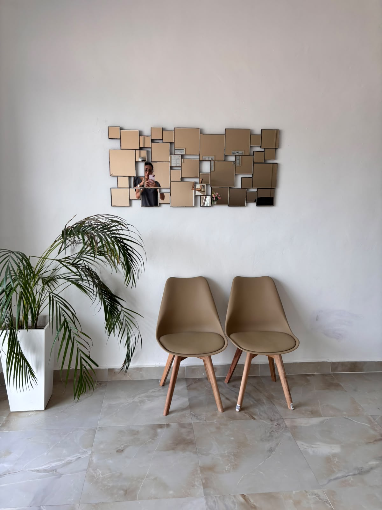

Atención dental para ti y tu familia.
En Dental Studio ofrecemos atención dental profesional, con valoración individual y opciones de tratamiento de acuerdo con las necesidades de cada paciente.


Cuidamos cada detalle de tu salud bucal.
Somos un consultorio dental enfocado en la prevención, el diagnóstico y la atención de distintas necesidades de salud bucal.
Ofrecemos atención profesional para ti y tu familia, procurando una experiencia clara, respetuosa y cómoda en cada visita.

Dra. Karla Pola Lázaro
Licenciada en Ciencias Odontológicas y Salud Pública
Soy la Dra. Karla Pola Lázaro, egresada en 2019 de la Licenciatura en Ciencias Odontológicas y Salud Pública por la Universidad de Ciencias y Artes de Chiapas.
Continué mi formación realizando mi servicio social en el Instituto de Seguridad y Servicios Sociales de los Trabajadores del Estado y desarrollando experiencia en el área de atención odontológica en San Cristóbal de Las Casas, Chiapas.
Cuento con seis años de experiencia brindando atención odontológica en procedimientos preventivos e integrales. Me destaco por realizar diagnósticos precisos y por la aplicación eficaz de tratamientos dentales, respaldada por conocimientos sólidos sobre procedimientos y técnicas, priorizando siempre el bienestar del paciente a largo plazo.
Trabajo de la mano con colegas especialistas para ofrecer diagnóstico y tratamiento integral en casos de mayor complejidad, de acuerdo con las necesidades de cada paciente.
Mi formación profesional
- Licenciatura en Ciencias Odontológicas y Salud Pública
- Egresada de la Universidad de Ciencias y Artes de Chiapas en 2019
- Carrera técnica en Prótesis Dental
- Diplomado en Armonización Orofacial por CEYESOV
- Actualmente curso la Residencia 1 de la Especialidad de Cirugía Bucal en CEYESOV
“Atención dental con claridad, respeto y profesionalismo.”Agendar una valoración →
Servicios dentales para distintas necesidades.
Opciones de atención dental para pacientes de distintas edades.
Odontología General y Conservadora
Tratamientos enfocados en conservar y restaurar la salud de tus dientes.
Limpieza Dental
Eliminación profesional de placa y sarro para mantener una sonrisa saludable.
Cirugía Oral
Procedimientos quirúrgicos dentales realizados con atención y cuidado especializado.
Blanqueamiento Dental
Opciones de blanqueamiento dental sujetas a valoración profesional.
Estética Dental
Opciones de atención estética dental de acuerdo con la valoración consultorio dental.
Endodoncia
Valoración y tratamiento del interior del diente cuando está indicado.
Atención Infantil
Cuidado dental especializado para niños en un ambiente cómodo y seguro.
Prótesis Dental
Opciones protésicas para apoyar la función y apariencia dental.
Ortodoncia
Valoración y opciones para corregir la posición dental y la mordida.
Atención enfocada en tus necesidades.
Nos enfocamos en ofrecer valoración profesional, información clara y una atención respetuosa para cada paciente.
Atención personalizada
Cada paciente recibe orientación de acuerdo con su valoración consultorio dental.
Atención profesional
Explicamos las opciones de atención disponibles antes de iniciar un procedimiento.
Atención para distintas edades
Atención disponible para niñas, niños, jóvenes y personas adultas.
Nuestro compromiso es brindarte información clara para el cuidado y seguimiento de tu salud bucal.
Un consultorio pensado para tu comodidad.
Estos espacios se pueden reemplazar después con fotografías reales del consultorio.





Agenda una valoración dental.
Comunícate por WhatsApp para solicitar información o agendar una valoración en Dental Studio Dra. Karla Pola.
💬 Agendar ahoraEstamos listos para atenderte.
Visítanos en El Jobo, Tuxtla Gutiérrez, o comunícate directamente por teléfono, WhatsApp o correo electrónico.
Información del consultorio
Sábado: 9:00 AM a 2:00 PM
Domingo: Cerrado